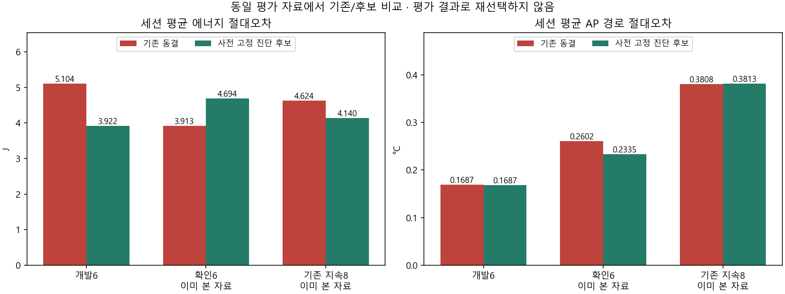
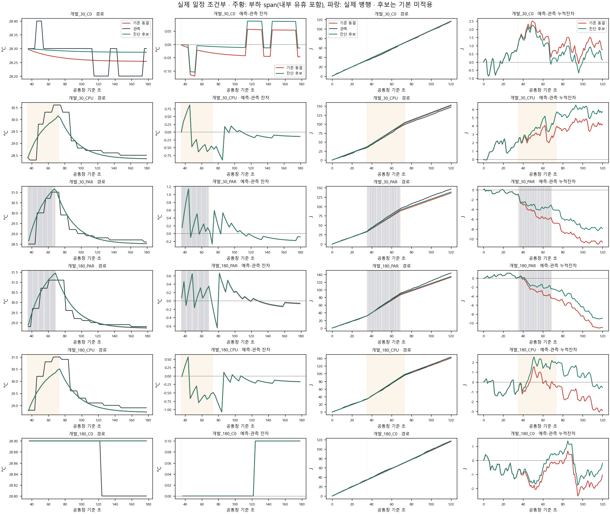
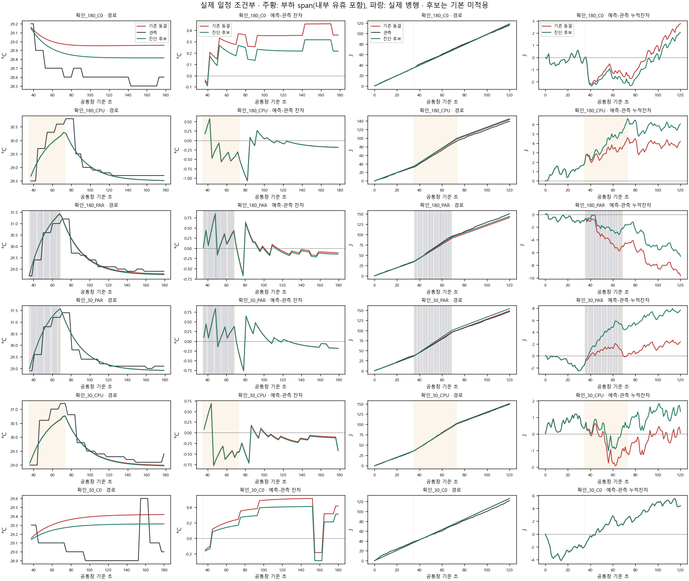
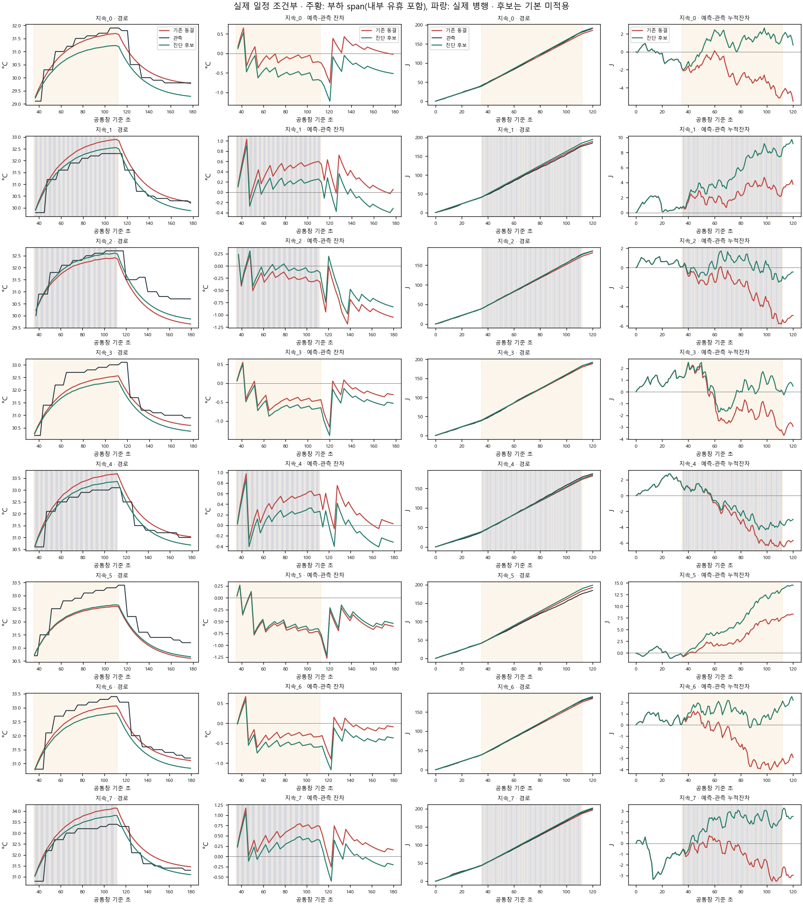

개발6에서 추정/선택을 봉인한 뒤 확인6+지속8을 평가했다. A 실제 일정 조건부 비용 예측이며 B 일정·응답 모형 보완이 아니다. 에너지와 AP 출력별 후보 및 그 단순 조합을 표시한다. 조합은 별도 적합/선택 후보가 아니다. 고정g 비교는 같은 fresh target 초기입력의 보조 분석이다.
범위·재현 · 100개 계산행·조건별 악화 · 4쌍 정책차이 오차 · 개발 동결
| 자료 | 역할 | 모형 | 세션 | J MAE | AP MAE | J 악화 | AP 악화 | 냉각 반대 |
|---|---|---|---|---|---|---|---|---|
| history | development | FROZEN | 6 | 5.104334491365148 | 0.16871151532719378 | 0 | 0 | 0 |
| history | development | AP_RIDGE | 6 | 5.104334491365148 | 0.16869444347310372 | 0 | 2 | 0 |
| history | development | FIXED_G_SAME_INPUT | 6 | 5.104334491365148 | 0.17351928816392634 | 0 | 2 | 0 |
| history | development | E_CONTROL | 6 | 3.9223562584170133 | 0.16871151532719378 | 1 | 0 | 0 |
| history | development | COMBINED_DIAGNOSTIC | 6 | 3.9223562584170133 | 0.16869444347310372 | 1 | 2 | 0 |
| history | confirmation | FROZEN | 6 | 3.912503082185097 | 0.2601793675346418 | 0 | 0 | 1 |
| history | confirmation | AP_RIDGE | 6 | 3.912503082185097 | 0.2334778629686387 | 0 | 2 | 1 |
| history | confirmation | FIXED_G_SAME_INPUT | 6 | 3.912503082185097 | 0.262595541398506 | 0 | 2 | 1 |
| history | confirmation | E_CONTROL | 6 | 4.694163051810946 | 0.2601793675346418 | 3 | 0 | 1 |
| history | confirmation | COMBINED_DIAGNOSTIC | 6 | 4.694163051810946 | 0.2334778629686387 | 3 | 2 | 1 |
| sustained | evaluation | FROZEN | 8 | 4.624083495015952 | 0.38083996504018786 | 0 | 0 | 0 |
| sustained | evaluation | AP_RIDGE | 8 | 4.624083495015952 | 0.38131808841870296 | 0 | 3 | 0 |
| sustained | evaluation | FIXED_G_SAME_INPUT | 8 | 4.624083495015952 | 0.39477298705826813 | 0 | 4 | 0 |
| sustained | evaluation | E_CONTROL | 8 | 4.14044336081264 | 0.38083996504018786 | 2 | 0 | 0 |
| sustained | evaluation | COMBINED_DIAGNOSTIC | 8 | 4.14044336081264 | 0.38131808841870296 | 2 | 3 | 0 |



